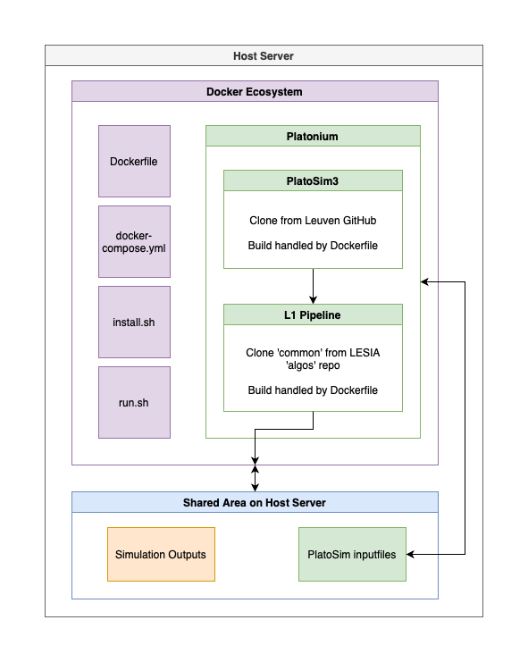

Pipeline¶
Welcome to the PLATO Ecosystem: A Docker wrapper for PlatoSim3 and the LESIA L1 pipeline. The following guide explains how to install, setup, and run the LESIA L1 pipeline as an integrated part of PLATOnium.
Initial setup¶
- Install docker and docker-compose following the instructions for your host OS.
- Clone the GitHub docker ecosystem repository to your server
- Inside the
docker_ecosystemfolder clone thePlatoSim3repo (checkout whatever branch you currently want to use, e.g. develop) - Inside the
docker_ecosystemfolder create a folder calledalgos - Inside the
algosfolder clone the LESIA L1 pipelinecommonrepository - Speak to KUL developers, LESIA developers, and James McCormac for access if required to PlatoSim3, L1 pipeline, and Ecosystem, respectively.
The software packages are cloned into this parent level directory to avoid passing git credentials into the Docker images. Once cloned the codes are copied into the Docker image as part of the setup. See image below for a schematic of the system.
{kind=link}

Installation¶
Building the Docker image¶
- From the
docker_ecosystemparent level folder do the following - Run
./install.sh - An Ubuntu 20.04 image will be created with the following actions:
- Python 3.9
- Sets up a non-root user etc
- Linux libraries for PlatoSim3 and L1 the pipeline
- Python modules for PlatoSim3 and L1 the pipeline
- PlatoSim3 and the L1 pipeline themselves
- Building an image from scratch with no caching takes about 30 min.
Configuring simulation storage area on host¶
Edit the docker-compose.yml file, adding a path on your host machine where you’d like to save the data. Specifically, edit the line in the volumes: section to map /path/on/host/:/host_dir. Docker will mount this area when the container stars and results will persist when the container is stopped.
Starting or stopping a container¶
Execute the
run.shscript to spin up a container in interactive mode- This uses
docker-composeto mount the storage area inside a container - Simulations can then be run inside the container as normal (see below)
- This uses
Type
exitto quit the container (as if it was a normal terminal)
Updating software in the Docker image¶
If one of the three software packages is updated, simply pull the latest code into the ecosystem folder and rerun the ./install.sh
command.
Pruning Docker resources¶
If you use Docker to build many images it’s advisable to run:
docker system prune -a
occasionally to free up some resources. Docker caches image layers to increase build speed but after a while those layers become stale as images are updated.
Run example¶
In this example we show hot to run the PlatoSim + L1 Pipeline in the container. Platonium is a wrapper around both PlatoSim and the L1 pipeline. Below is the current usage for platonium and an example command to simulate 1 quarter of data for a given star on a particular camera including some supplied variability.
Platonium requires the normal PlatoSim inputfile.yaml along with a catalog from picsim, any variability signals (e.g. from varsim) and instrument specific configurations for multiple cameras from payload. Please see the full platonium documentation for a full description of the inputfiles. Note, picsim, varsim and payload can be run inside the container environment also. Platonium expects these input files in the following directory:
/host_dir/<project>/input
where <project> is described below and /host_dir is the folder mounted from the host OS in the docker-compose.yml file above.
The following command can be run inside the container to produce a quarter long simulation of a single star (number 46) from camera group 1 camera 1 from quarter 23 and assuming the P5 sample. We also inject stellar/transit signals using the --varfile. The project kul20 corresponds to the KUL technical note 20 simulation settings, therefore for this run the inputs should be stored in /host_dir/kul20/input.
platonium 46 1 1 23 --project kul20 --sample P5 --pipeline --varfile /host_dir/varsource/P5/varsource_000000046.txt -v 3 -w
Platonium runs PlatoSim and analyses the imagettes. Outputs (photometry etc) are stored in /host_dir/kul20/output/reduced/P5/000000046/. Platonium also produces a summary of the processing time when complete.
Output files¶
During a simulation, PLATOnium creates three folders called reduced, microscan, P1 (or P5 depending on sample parsed). By default during the run a lot of files are created and stored in microscan and P1, but at end simulation, the final files are stored into reduced. Note that these foder contains a tree of subfolders to keep each simulation isolated when running in parallel. A standard filename is used for each data product, e.g. the light curve file 000000001_Ncam1.1_Q1.ftr refers to the star ID (000000001), the N-CAM camera-group no. and camera no. (Ncam1.1), and the quarter (Q1).
Unique files returned after a P1 sample run:
- Final extracted P1 sample data with the following columns (
*.ftr):time: [second] Time points with zero-point at mission BOLflux: [electron] Extracted fluxcx: [pixel] X centroid pixel within 6x6 pixel subfieldcy: [pixel] Y centroid pixel within 6x6 pixel subfieldbg: [electron] Background fluxflux_err: [electron] Flux errorcx_err: [pixel] X centroid pixel errorcy_err: [pixel] Y centroid pixel errorbg_err: [electron] Background flux errorchi2: Chi-sqaured of PSF fititer: Iterations before convergecne for PSF fitting
Unique files returned after a P5 sample run:
- Final extracted P5 sample data with the following columns (
*.ftr):time: [second] Time points with zero-ponint at mission BOLflux: [electron] Extracted and corrected fluxxc: [pixel] X centroid pixel within 6x6 pixel subfieldyc: [pixel] Y centroid pixel within 6x6 pixel subfieldflux_cor: [norm.] Flux model for jitter/drift correction
- Mask-update file for each target star (Marchiori+2019;
*.fits). - Stellar Polution Ratio (SPR) information of target star as per Marchiori+2019 (
*.spr).
Files indentical for P1 and P5 sample:
- An overview table (in feather format) of the simulation (
*.table):ID: Star ID of nine digitsPIC: PIC name of targetra: [degree] ICRS Right Ascensiondec: [degree] ICRS Declinationmag: PALTO passband magnitude Pgroup: Camera-group IDcamera: Camera IDquarter: Mission quarter numberccd: CCD ID for star (subfield) locationxCCD: [pixel] X centroid pixel coordinate of full frame CCD of first imageyCCD: [pixel] Y centroid pixel coordinate of full frame CCD of first imagerOA: [degree] Radial distance to optica axisxFP: [millimeter] X focal plane coordinate of first imageyFP: [millimeter] Y focal plane coordinate of first imagencon: Number of contaminants in subfield
- Information about the PSF inversion (
*.invert). For more information see: PLATO-PL-LESIA-TN-0069 and PLATO-PL-LESIA-TN-0070.